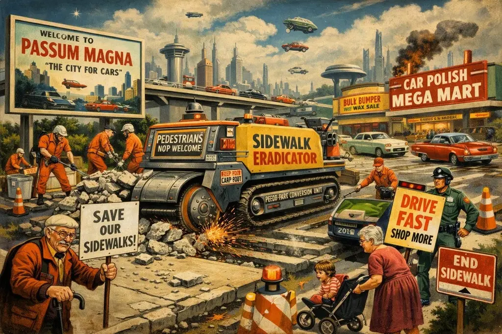

Passum Magna Eradicates Pavements to Bolster Bulk Car-Polish Sales

AN ABSOLUTE OUTRAGE ON FOUR WHEELS AS LOCAL AUTHORITIES RECLAIM THE TARMAC FROM RECKLESS FOOT-TRAVELLERS!
By Amthonie Vandenberg, Senior Interplanetary Correspondent
PASSUM MAGNA, AMBULAX — In what has been described by local officials as a “triumph of rational urban streamlining,” the Municipal Council of Passum Magna has successfully abolished the last remaining zebra crossings and pedestrian subways across the city, citing an urgent requirement to maximise the uninterrupted momentum of two‑tonne steel saloons.
Under new zoning regulations passed by a unanimous show of hands in the High‑Octane Chamber, asphalt is now legally defined as exclusive territory for internal combustion. The council is currently drafting emergency legislation to erase footpaths entirely along major thoroughfares, particularly in retail districts where space previously wasted on paving slabs could be better repurposed as short‑stay parking for citizens purchasing bulk quantities of seasonally discounted refuse sacks and silicone bumper polish.
“For too long, the economic engine of Passum Magna has been held hostage by individuals lingering on kerbs with an unearned sense of entitlement,” declared Chief Mobility Officer Councillor Reginald Vane‑Throttle. “Expecting a driver engaged in high‑speed navigation to anticipate the erratic trajectory of an unpredictable biped is frankly asking too much of modern onboard sensor arrays.”
The decision has provoked a bitter backlash among the city’s pedestrian minority. A militant coalition composed primarily of senior citizens—stripped of their driving licences following routine cognitive evaluations—and optimistic young parents pushing prams has staged several illegal blockades across key intersections. The protesters argue that navigating four lanes of blind, unsignalled traffic without a motor vehicle requires an athletic agility rarely possessed by those recovering from hip replacements or balancing infants while maintaining dignity.
Tensions reached a head on Tuesday when a tactical blockade of four slow‑moving Zimmer frames brought the central ring road to a standstill for nearly twenty minutes, causing severe engine idle and a tragic delay in the delivery of trade‑price windscreen washer fluid. In a bid to appease the disenfranchised agitators, the Council has proposed a compromise: the creation of a dedicated Pedestrian Enterprise Zone (PEZ) located fourteen miles outside the city perimeter, where citizens may indulge in foot‑based commerce without obstructing traffic.
Critics have pointed out that the proposed sanctuary is surrounded entirely by a six‑lane motor‑arterial with no footbridges, leaving it somewhat unclear how pedestrian shoppers are expected to arrive there without being reduced to road ballast. Council spokesman Vane‑Throttle dismissed these concerns as “wilfully pedantic over‑thinking,” suggesting that those determined to walk should simply learn to leap further.